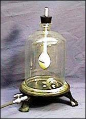

Desde Europa

Esta es la primera de tres páginas preparadas para publicarse durante mi ausencia en Europa. Trataré de contribuir con ellas desde lejos, si mi tiempo me lo permite…
Hace poco me encontré con este artículo archivado que pienso que encontrarán interesante, un texto que escribí en 1994. Creo que es un buen ejemplo de con cuánto cuidado los reclamantes pueden arreglárselas para evitar cualquier verificación real de las esperanzas que atesoran.
Había tenido unos cuantos encuentros con Martin Caidin (1927-1997), autor de unos cincuenta libros, algunos de los cuales fueron convertidos en películas y programas de televisión. Caidin también hizo extravagantes alegaciones de capacidades psíquicas las cuales, dijo, probarían con facilidad que la psicokinesis (PK) era real. Evitó desesperadamente aceptar mi desafío rehusando hasta el más simple de los protocolos de control propuestos, pero nunca se cansó de explayarse sobre mi negativa a probarlo. ¿Dónde escuchamos eso antes?
Aquí está ese artículo, del viernes 20 de mayo de 1994:
¿Finalmente, el gran descubrimiento psíquico?
Me han informado que el parapsicólogo californiano Loyd Auerbach está llevando al autor de ciencia ficción Martin Caidin, su actual gurú, en un recorrido por todos los Estados Unidos afirmando que Caidin puede enseñarle a la gente a hacer que haga girar un papel sobre una punta de aguja usando poder psicokinético. Tales “motores psíquicos” se han vendido y descrito en libros de pasatiempos desde hace años. El papel gira por los efectos del aire proveniente de la respiración, el calor corporal, corrientes, etc. Auerbach le cuenta a todo el que quiera escucharlo que Caidin ha podido mover hasta 18 papeles simultáneamente por medio de sus poderes personales de PK, y que incluso que uno se moviera así dentro de una campana de Bell vaciada. Si esto es cierto, ha habido un gran avance en la física, la parafísica y en la comprensión de las fuerzas de la naturaleza. Puede ser el descubrimiento psíquico tanto tiempo esperado.
O quizá no.

Parece que Loyd Auerbach prefiere creer y aceptar todas y cada una de las cosas que le cuentan los personajes interesantes. Puedo apostar con confianza a que no vio realmente moverse los 18 objetivos, ni presenció el giro del papel en la campana de Bell vaciada. Apostaría que Martin Caidin le contó todo esto, y él simplemente lo creo. No me parece en lo absoluto que Auerbach sea un artista del fraude, creo que simplemente es del tipo crédulo. Después de todo, ¡vive de escribir para la revista FATE, y sabemos lo precario de ese trabajo!
En relación con una alegación de Caidin de que sencillamente me negué a ir a presenciar su milagro, de nuevo los feos hechos interfieren con el mito. He pasado demasiado tiempo de mi vida tratando de ponerme a la par de los <¿deseos infundados?> que no están allí cuando yo llego, así que cuando se pusieron en contacto conmigo con un desafío de ir y verlo presentarse, me imaginé que estaba preparando una habitación llena de papeles suspendidos y que afirmaría haber tenido éxito cuando uno o más empezaran a moverse. De hecho, al escuchar más sobre el supuesto “milagro”, ese resultó ser el caso, aunque en escala mayor de lo que había imaginado. Después de todo, mientras más papeles supsendidos, mejor la probabilidad de que unos pocos empiecen a moverse gracias a fuerzas físicas perfectamente comprendidas, no PK.
Ahora bien, es casi literalmente imposible preparar una habitación en la cual no haya corrientes de aire, residuales o de otro tipo, y dado que la masa de aire actúa como un fluido, debe moverse, sujeta a los más ligeros cambios de temperatura o de presión atmosférica. Cualquier movimiento del aire hará girar a un papel suspendido que se encuentre balanceado con cuidado. Mi desafío a Caidin era que hiciera mover un papel específico y elegido al azar entre el bosque de papeles, por medio de psicokinesis, sin que se movieran otrospapeles. Esa era la única forma en la que podía lograr que yo examinara su milagro. Pero Caidin decidió que (a) yo no era la clase de persona que debería hacer tal prueba, y (b) que no tenía que probarme nada, de todas maneras. Tiene razón en al menos una de esas cosas.
Aceptaré la alegación de Caidin (y la validación de su discípulo) si hace mover un papel (u otro) por poder psicokinético mientras está sellado en una campana de Bell. Por supuesto habrá que tomar precauciones contra sustancias volátiles, electricidad estática, etc. Esto se hace fácilmente, y cuesta muy poco; podría hacerse de manera fácil y definitiva. Mi predicción: que Auerbach y Caidin se rehusarán a tal prueba, por razones del tipo de “no hay tiempo”, “no me interesa”, “no necesito hacerlo”, etc. Tienen andando un lindo negocio, enseñando este “poder” a los crédulos a USD 80 cada uno, y creo que no querrán que nadie interfiera con ello. Y, antes de avanzar más, definamos el término “campana de Bell”. Es un contenedor de vidrio, fuerte y de forma de campana, que ha sido aplanado en el borde de forma que puede sellarse (utilizando grasa para sellar de bajo vapor formulada especialmente) contra una superficie plana y horizontal. Su tamaño va desde 10cm hasta 60cm de alto. El dispositivo normalmente está provisto de una espita de entrada en un lado y de una válvula, de modo que puede vaciarse el interior hasta el grado de vacío necesario, y si se necesita, el espacio interior puede ser cargado luego con otro gas o mezcla de gases, a cualquier presión necesaria dentro de los límites del dispositivo.
Nota: ¡Un simple frasco de vidrio invertido sobre un papel suspendido no es una campana de Bell! Si Caidin está usando el sistema inferior, que lo diga. Se supone que él y Auerbach, después de todo, son científicos; que empiecen a ponerse científicos. Están cobrando USD 80 por cabeza a sus clientes, accediendo a intentar enseñarles cómo mover papeles suspendidos por psicokinesis. Cualquier cosa menos de un protocolo estrictamente aplicado no está en concordancia con dicho acuerdo.
Hago notar, de paso, que los dos Chicos del Proyecto Alfa, Steve Shaw y Michael Edwards, fueron capaces de hacer girar un papel bajo una imitación de campana de Bell en el Laboratorio Mac allá por 1978, y convencieron a los parapsicólogos de allí de que era un logro auténtico de PK. Sus exclamaciones de gusto ante el fenómeno fueron bastante reales.
Otra predicción: Caidin y su apóstol nº 1 seguirán con el proceso de demostrar y enseñar PK a USD 80 por cabeza tal como lo planearon originalmente, junto con las afirmaciones extravagantes y las anécdotas coloridas. Algunos de los clientes decidirán que tienen poderes psicokinéticos, y algunos no. Los que decidan que no, no se quejarán, sino que irán en busca de otro gurú.
¡Sigan con nosotros! Ya escucho los avisos publicitarios…
¡ESCUCHE con sus propios oídos la aparatosa presentación de C & A mientras los indignados dueños vociferan y echan humo!
¡VEA a los clientes descontentos preguntarse por qué no pueden mover un papel suspendido!
¡EXPERIMENTE otro fiasco más de la New Age!
¡MEJOR que doblar cucharas!
¡MÁS ÚTIL que un sistema para la lotería (o que doblar cucharas)!
¡MÁS BARATO que la cirugía psíquica filipina!
¡CODÉESE DE VERDAD con grandes celebridades como Caidin y Auerbach!
¡Incluso OBTENGA AUTÓGRAFOS!
(Nota: no se admiten quejas, para preservar la integridad científica de este evento místico.)
QUÉDESE TRANQUILO: no se admitirán consejeros no deseados ni temibles escépticos.
¡Usted reirá! ¡Llorará! ¡Aullará! ¡Pero no se hacen devoluciones!
Esperando la respuesta correcta
El lector Don Bruey nos dice:
Leyendo un reciente comentario sobre la gente que ve lo que quiere ver cuando se trata de astrología, etc., publiqué esta historia en uno de los foros de la JREF hace un tiempo, también usando el seudónimo de Profesor Frink 1.
Fui a comer el año pasado con mi hijo, que cursa preescolar. Acababa de recibir una caja de hamburguesas para niños en un restaurante de comidas rápidas. El juguete tenía la forma de un personaje de videojuego. Su brazo era una palanca, y cuando se la pulsaba, hacía girar una bola interna a resorte cuya superficie se veía a través de un hoyo en el estómago de la figura. Cuando terminaba de girar, aparecía una palabra o frase: “No”, “Sí”, “Quizá”, “Vuelva a preguntar” y así. El tipo de respuestas que se obtienen de una Bola 8 Mágica.
Luego de que le expliqué cómo funcionaba, hizo una pregunta: “¿Hoy va a llover?”. Tiró la palanca, y apareció “Sí”. Cuando le dije que decía “Sí”, inmediatamente volvió a tirar la palanca. Esta vez decía “Quizá”. Entonces volvió a tirar la palanca algunas veces más. Cuando finalmente consiguió una respuesta “No”, gritó: “¡Iupi! ¡Hoy no va a llover!”.
¿No le suena a ningún fanático de la astrología que conozca?
Preguntas profundas
El corresponsal John Atkinson se pregunta, preocupado por la Ominosa Maldición de Geller:
Me estoy preocupando por Uri Geller… ¿Cuánto pasará antes de que le exija un millón de dólares al Manchester United para NO darle su apoyo?
¿Cuánto pagarían los Yankees de Nueva York para NO tenerlo?
¿Bush o Kerry le pagarían para apoyar a su adversario?
John, esos son asuntos filosóficos más allá de mi experiencia…
De nuevo Stereophile
El lector Dan Dugan de Pittsburg, Pennsylvania, escribe:
A continuación cito parte de un intercambio de mensajes que tuve en un grupo de noticas de internet con el editor de la revista Stereophile en relación con su mención continua de alegaciones sobre audio en su colección de artículos. ¿Podría hacer un comentario sobre ello? Estoy de acuerdo con sus observaciones sobre las alegaciones sobre audio y me gustaría tener más información sobre los mensajes que intercambió con esa revista en relación con la posible prueba de alegaciones. He intercalado dos mensajes para facilitar la lectura:
Asunto: James Randi gets clarified on audio bizDe: Stereophile_Editor@Compuserve.com (John Atkinson)Fecha: 15 Sep 2004 22:43:01 GMTEn otro de los artículos [de Randi], se dice que Stereophile entró en conversaciones para probar las alegaciones sobre el reloj Tice que habían evaluado tenía un efecto audible positivo.
Esto no es correcto. James Randi no se puso en contacto con nadie de Stereophile sobre la verificación del Tice TPT Clock (al que se refirió originalmente en su sitio web como “Tate” Clock). Puede hallar mis comentarios sobre los dispositivos Tice Clock y Peter Belt en http://www.stereophile.com/asweseeit/787/ y el artículo de evaluación de Stereophile en http://www.stereophile.com//accessoryreviews/784, mientras que el informe de J. Gordon Holt sobre los dispositivos Belt se publican en http://www.stereophile.com/asweseeit/110/ .
Randi comenta: Si el Sr. Atkinson desea ver la carpeta que tenemos sobre Tice y Stereophile, son 57 páginas impresas, incluyendo una carta de dos páginas del 23 de agosto de 1991 a Thomas J. Norton del personal de la revista esbozando una prueba simple que podría realizarse para probar las alegaciones sobre Tice. Esa carta nunca recibió la cortesía de una respuesta de Stereophile.
Dan continúa:
A lo que respondí:
Fecha: 17 Sep 2004 03:12:37 GMT
En cuyo caso uno podría sugerir que hiciera una aclaración, dado que correcciones similares se publican rápidamente cuando descubre que cometió un error, este fragmento: http://www.randi.org/jr/072304willful.html#11
Citando a Randi:
Me he cruzado antes con Stereophile. Vea http://www.randi.org/jr/03-23-2001.html. Discutimos hacer pruebas correctas de sus alegaciones ridículas por dispositivos como el “Tice Clock”, un procedimiento simple y definitivo que ciertamente mostraría la verdad detrás del disparate… pero ellos se alejaron a mitad de la dsicusión. También busqué al propio George Tice, y hallé que sigue huyéndole a las pruebas correctas, incluso aunque yo tenía la mejor gente de audio y el mejor equipo disponible para hacer el trabajo. Siempre fue así.
Afirmaciones audaces, luego retirada. Y nunca se avergüenzan, porque saben que los ingenuos seguirán comprando los productos.
[Randi] puede haber mezclado recuerdos de las pruebas propuestas con la discusión sobre Tice descrita en http://www.randi.org/jr/04-20-2001.html. El enlace sobre Stereophile citado apunta en parte a lo siguiente:
Citando a Randi:
Esta revista, Stereophile, ha publicado artículos que hacen que la mayoría de la pseudociencia palidezca en comparación. El “Reloj Tate”, un reloj digital común de Radio Shack tratado con nitrógeno líquido y un “proceso secreto” para alinear electrones en la fuente de energía (?) es sólo uno de los productos que probó y aprobó, así como cables para altoparlantes que cuestan USD 1800, marcados con flechas para indicar en qué dirección debe viajar la electricidad.
Pero, como todas las obsesiones, estos son artículos que los aficionados simplemente deben tener, porque son caros y “de onda”.
Agrega Dan. “La mención a ‘Tate’ es seguramente un error tipográfico dado que usa el nombre correcto en muchos lugares en varios artículos”.
Sí, confundí dos fraudes, Tate y Tice: mea culpa. Y no, este no es el mismo John Atkinson que escribió los comentarios sobre Geller. ¡Dos John Atkinsons totalmente diferentes! ¿Cuáles son las probabilidades de eso?
Dios, el genio de los enigmas
El lector Andrew Stouppe observa:
Hay algunas cosas que siempre me han hecho poner los ojos en blanco cuando aparece el tema del Código de la Biblia.
¿Con qué autoridad en la información llegamos a la conclusión de que vale siquiera la pena buscar mensajes codificados en algún texto sagrado? ¿Quién dijo que siquiera estaba allí para que la buscáramos? ¿Dios? Si asumimos que existe un Dios, de lo cual no tenemos evidencia, ¿por qué nos daría un manual bastante explícito sobre la vida y después se tomaría el trabajo de ocultar mensajes en él sin mencionarlo? ¿No son el propósito y la finalidad de la Biblia, el Corán y la Torá ser una guía para que la siga toda la gente de Dios? La finalidad de la codificación es ocultar la información de la gente que, si la poseyera, lo dañaría a uno. ¿Qué cosa podría temer Dios que algún hombre supiera? Si se han codificado mensajes en esos textos, entonces ¿cómo sabemos que estamos interpretándolo correctamente? ¿Dónde está la clave de decodificación? La mayoría de las discusiones sobre códigos que he visto parecen dejar de lado completamente estas cuestiones.
Como usted y yo ya sabemos, el esfuerzo y la investigación desperdiciada en esta búsqueda no ha producido beneficio alguno para la humanidad. No hemos salvado vidas ni recursos con predicciones exactas obtenidas de esos textos. De hecho, en un programa que vi en cable sobre los Códigos de la Torá, los “expertos” lectores de códigos hicieron afirmaciones que querían decir que intentar ver el futuro con los códigos probablemente haría enojar a Dios. Entonces ¿qué sentido tiene? Si nos dio predicciones exactas del futuro como recompensa por interpretar el código, ¿debemos creer que espera que no lo usemos en nuestro beneficio?
Esta gente afirma que tienen conocimiento especial de esos textos. La naturaleza de sus alegaciones contradice la intención explícita de esos textos. De hecho los textos prohíben específicamente este tipo de actividad:
Ezequiel 13:9: Voy a levantar la mano para castigar a los profetas que tienen visiones falsas y cuyas profecías son mentira.
Ezequiel 22:28: Los profetas ocultan la verdad, como quien blanquea una pared; dicen tener visiones, y anuncias cosas que resultan falsas. Aseguran que hablan en mi nombre, cuando en verdad yo no he hablado.
Mateo 24:24: Porque vendrán falsos mesías y falsos profetas; y harán grandes señales y milagros, para engañar, a ser posible, hasta a los que Dios mismo ha escogido.
Además esos textos afirman que están completos. La palabra de Dios es para todos y va a usar tantas palabras como sea necesario para que se entienda su mensaje. Si dios no lo puso allí en blanco y negro para que todos lo vean, entonces no es la palabra de Dios.
Luqman [31.27]: Y si cada árbol de la Tierra se convirtiera en plumas y el mar en tinta, sumándole siete otros mares más para aumentarlo, las palabras de Alá no terminarían; pues ciertamente Alá es poderoso y sabio.
Si Dios existe, en verdad no necesita que decodifiquemos mensajes secretos para revelar sus palabras por él. Ha dicho esto él mismo, si tomamos los textos sagrados como su palabra. Si Dios existe entonces debemos quedarnos tranquilos de que él ha revelado todo. Si se nos dice en la Biblia, el Corán y la Torá que esos libros lo abarcan todo entonces debemos confiar en él. Ha afirmado es que su palabra es para todos y se aplica a todos por igual. Claro está que Dios está más allá de las patrañas y los trucos. No los necesita y con frecuencia los señala como un atributo especialmente humano.
Si Dios no existe entonces esos textos son la obra de los hombres. Los hombres han creado muchos textos alegóricos y simbólicos con significados ocultos. Sin embargo una vez que excluimos a dios y antes de que podamos empezar a ocuparnos de la inutilidad de los “mensajes” o la dificultad de codificar mensajes que puedan ser extraídos de manera confiable de un texto que en sí mismo expresa ideas de forma coherente, primero debemos ocuparnos del tema de la exactitud de las predicciones humanas sobre el futuro…
Tijeras, peine y bola de cristal
El lector Daniel Cullen escribe:
Soy un mago de 17 años y me especializo en mentalismo. No creo en poder psíquico alguno ni en ninguna de esas estupideces, como dirían Penn y Teller. La razón de este mensaje es que mi estilista cree que tiene opderes psíquicos. Dice que le empezó tardíamente en la vida y que no le gusta. Dice que usa lectura fría. Un día luego de cortarme el pelo decidí preguntarle sobre ello. Y lo único que pude hacer para conservar la cara seria fue decir “¡Guau!”. Primero me dijo que puede mirar a alguien a los ojos y decir su futuro o su pasado. Así que le dije: “Adelante, mírame a los ojos y dime qué ha pasado en mi vida en los últimos días”. Entonces dijo “Bueno, ha sido un largo día y mi cerebro está cansado”.
Respondí: “Vamos, afirmas ser tan grande y haber hecho todas estas cosas asombrosas, dame una pequeña muestra”. Entonces intentó zafarse de nuevo diciendo que necesitaba sostener un objeto mío, o preferiblemente cristales. Finalmente se conformó con mirarme simplemente a los ojos y salió con cosas sencillas. Una rubia tiene que hablar conmigo, pronto sucederá u accidente, un tipo con el pelo corto que de vez en cuando usa anteojos. Más tarde me dijo de nuevo que no le gusta tener este poder, que le da miedo. Entonces dijo que quería que lo visitara algún domingo, que es cuando hace este trabajo por lo general, y que quería darme unos cristales. Le respondí diciéndole “Sí, claro, Dave”. La próxima vez que vaya llevaré un grabador. Necesito que me diga usted algunas cosas para exponerlo y probarle que es un fraude. ¿Me sugiere algo? Tengo la impresión de que exponerlo a él y a otros es muy importante. Gracias.
Daniel, no asumas que este hombre es un fraude. Si cree honestamente que tiene tal poder, es bastante posible que no haya un fraude. El autoengaño es lo que encontramos con más frecuencia en la JREF, de modo que sé un poco más amable.
Mándelos aquí
El lector Stephen Bickers tiene un problema:
Antes de empezar con el verdadero propósito de este e-mail, me gustaría decirle lo impresionante y fascinante que me parece su sitio web. Ojalá todos pudieran leerlo para que libráramos al mundo de tanto disparate.
Actualmente atravieso un dilema moral y como he leído parte de su trabajo, pensé que usted podría ser la persona adecuada para darme consejo.
Hace unos pocos años, coleccioné por un tiempo libros sobre lo paranormal, como los de Erich Von Däniken o Brinlsey Le Poer Trench y otros de su tipo. Los recogía de tiendas de caridad, los leía divertido por las locas ideas que contenían, y luego los guardaba en una repisa para que juntaran polvo. Pasaron los años, hasta que hace poco me sentí impulsado a limpiar parte de la basura que he acumulado. Ahora bien, aunque esos libros son inútiles (tanto en lo monetario como en cuanto a su contenido), como un bibliófilo empedernido no me decido a arrojar simplemente esos libros a la basura. Sin embargo, dado el riesgo de que alguien más crédulo que yo los compre, tampoco puedo donarlos a una tienda de caridad o a una librería de segunda mano.
Entonces, ¿cuál sería su consejo? ¿Contradigo todas mis creencias sobre los libros y los tiro a la basura? ¿O los dejo intactos y corro el riesgo de difundir las ideas peligrosas que contienen? Me gustaría mucho saber su opinión sobre mi dilema.

Sí, tengo una solución. La biblioteca de la JREF —que tiene casi 1900 libros actualmente— ciertamente les da las bienvenida a esos libros. Nuestro procedimiento es mandar cualquiera que esté repetido al equipo de Skeptic Magazine y Michael Shermer en California, así que nada se desperdicia. Esperamos su envío…
Negación de la teocracia
Parece que el gobierno serbio ha revertido una orden previa reciente que prohibía la teoría de la evolución de Charles Darwin en las escuelas. A esto le siguió una amplia crítica mundial por parte de los científicos. El viceministro de educación Milan Brdar anunció que su superior, Ljiljana Colic, quien había establecido la controvertida política, “salió en viaje de negocios” después de haber propuesto prohibir la teoría de la evolución durante este año escolar, hasta que pudiera enseñarse creacionismo a la par de aquélla. Había dicho que tanto la teoría darwiniana de la selección natural como la visión del Antiguo Testamento sobre el principio de la vida eran igualmente “dogmáticas”.
Esto es ciertamente falso. El dogmatismo es un concepto religioso, y no se aplica en ciencia, aunque a los fundamentalistas les guste afirmar lo contrario. Luego de numerosas protestas de los científicos, los maestros y los partidos de oposición, el Primer Ministro serbio Vojislav Kostunica convocó a una reunión a la señora Colic, luego de lo cual se descartó la medida.
Un destacado biólogo serbio describió la directiva original como “escandalosa” y dijo que mostraba que la Iglesia Ortodoxa de Serbia interfería en la política. “De a poco estamos convirtiéndonos en un estado teocrático y en el siglo XXI estamos volviendo al Libro de las Revelaciones”, dijo.
Caray, aquí en los EE.UU. oímos y leemos que cada discurso, cada comentario y cada declaración que viene de la Casa Blanca tiene contenido religioso, más allá de la valorada “separación de la iglesia y el estado” que se supone que tenemos. Haciendo declaraciones en Florida hace poco luego de su inspección personal como resultado de los huracanes, el Presidente Bush les aseguró a los devastados ciudadanos que “Estamos rezando por ustedes, les conseguiremos ayuda tan pronto como sea posible, y le pedimos a Dios que los bendiga a ustedes y a sus familias”. Qué tranquilizador…

Notas
- 1
-
El profesor Frink es el científico nerd que aparece en el programa de dibujos animados estadounidense “Los Simpson” [N. del T.]
Comentarios
Comments powered by Disqus